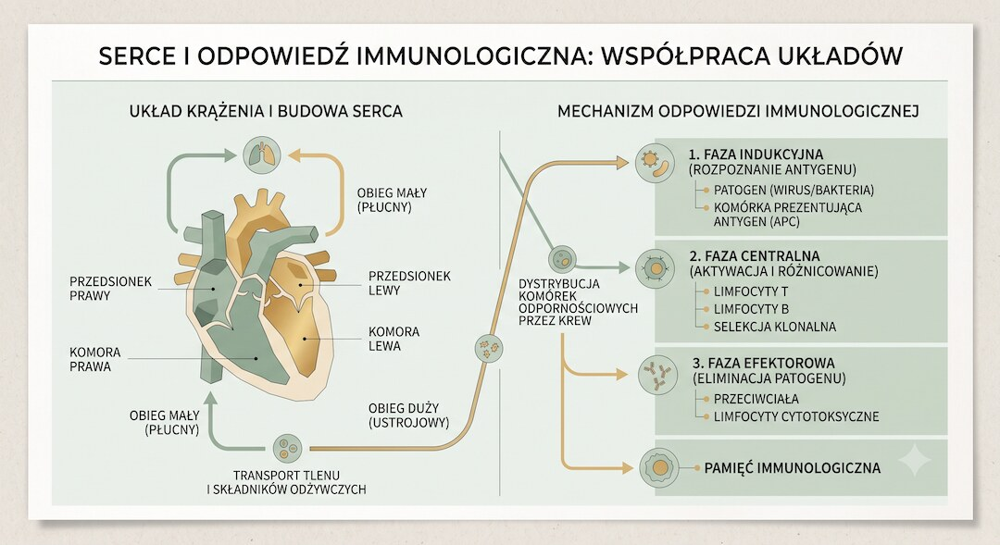
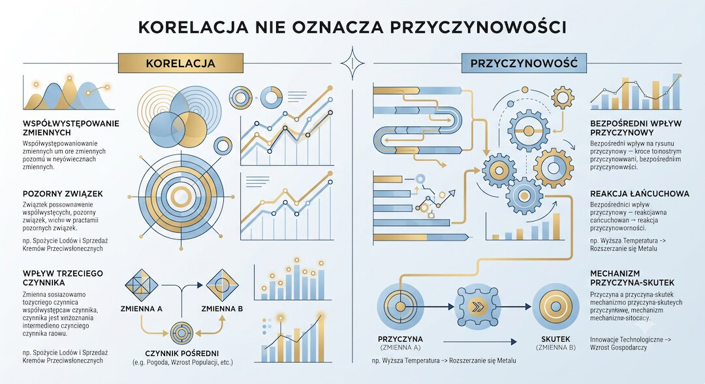

Szybka odpowiedź
Szczepionki przeciw COVID-19 mogą powodować działania niepożądane, ale profil zależy od konkretnej technologii, preparatu, wieku i płci. Po szczepionkach mRNA rozpoznano bardzo rzadkie zapalenie mięśnia sercowego lub osierdzia, najczęściej u młodszych mężczyzn. TTS wiązano bardzo rzadko ze szczepionkami wektorowymi AstraZeneca i Janssen. Jeśli zdarzenie wpisano do VAERS, samo zgłoszenie nie dowodzi przyczyny.
Kluczowe wnioski
- Ryzyka trzeba przypisywać do konkretnego preparatu i grupy, a nie do „wszystkich szczepionek”.
- Ból w klatce, duszność lub kołatanie po szczepieniu wymagają oceny, szczególnie w pierwszych dniach.
- TTS dotyczyło bardzo rzadkich zdarzeń po wybranych szczepionkach wektorowych, nie typowego zakrzepu po każdej szczepionce.
- VAERS służy do wychwytywania sygnałów; zgłoszenie może nastąpić bez potwierdzenia związku przyczynowego.
Jakie objawy po szczepieniu są częste, a które wymagają pomocy?
Ból w miejscu wkłucia, zmęczenie, ból głowy, mięśni i gorączka zwykle ustępują w ciągu kilku dni. Pilnej oceny wymaga nasilony ból w klatce, duszność, omdlenie, utrzymujące się kołatanie, objawy neurologiczne albo ciężka reakcja alergiczna. Rodzaj i czas objawów pomagają ocenić możliwą przyczynę.
Nie diagnozuj zapalenia serca samym tętnem z zegarka; przydatność urządzeń omawia artykuł o pomiarach z Apple Watch.

Co wiadomo o zapaleniu mięśnia sercowego po mRNA?
EMA uznaje zapalenie mięśnia sercowego i osierdzia za bardzo rzadkie działanie szczepionek Comirnaty i Spikevax. Ryzyko było największe u młodszych mężczyzn, zwykle po drugiej dawce wcześniejszych schematów. Nie wolno przenosić tej częstości bezpośrednio na osobę po 50-tce ani na każdy aktualny preparat.
Decyzję o kolejnej dawce po potwierdzonym zapaleniu serca podejmuje lekarz według aktualnych zaleceń.
Czym było TTS po szczepionkach wektorowych?
TTS łączy zakrzepicę w nietypowych lokalizacjach z małą liczbą płytek. EMA powiązała bardzo rzadkie przypadki z Vaxzevria i Jcovden. To odrębny zespół od typowej zakrzepicy żył głębokich i nie jest właściwe przypisywanie go szczepionkom mRNA bez danych.
Informacje historyczne trzeba czytać razem z nazwą preparatu; aktualną dostępność i zalecenia sprawdzaj w oficjalnych źródłach.

Dlaczego VAERS nie podaje liczby przypadków spowodowanych szczepieniem?
Do VAERS można zgłosić zdarzenie występujące po szczepieniu nawet bez dowodu, że szczepionka je wywołała. System pomaga wykrywać nietypowe wzorce, które następnie analizuje się z użyciem dokumentacji, porównania częstości i innych baz. Dzielenie liczby zgłoszeń przez liczbę dawek nie daje wiarygodnego ryzyka przyczynowego.
Zasady oceny źródeł i przekazów zdrowotnych rozwija poradnik o mediach społecznościowych, analiza mechanizmów strachu oraz materiał o ocenie korzyści i ryzyka szczepienia HPV.
| Sygnał | Co wiadomo? | Co zrobić? |
|---|---|---|
| Ból ręki i gorączka | Częste, zwykle krótkie | Obserwacja i zalecenia producenta |
| Ból w klatce lub duszność | Może wymagać wykluczenia zapalenia serca | Pilna ocena |
| TTS | Bardzo rzadkie po wybranych wektorowych | Ocena objawów i preparatu |
| Zgłoszenie VAERS | Sygnał, nie dowód przyczyny | Sprawdzić analizę regulatora |
Uczciwa rozmowa o bezpieczeństwie nie ukrywa działań niepożądanych i nie zamienia surowych zgłoszeń w dowód przyczynowy.
Najczęściej zadawane pytania
Czy szczepionka mRNA może wywołać zapalenie mięśnia sercowego?
Tak, jest to uznane bardzo rzadkie działanie, częstsze w określonych młodszych grupach. Objawy wymagają oceny.
Czy AstraZeneca powodowała zakrzepy?
EMA powiązała Vaxzevria z bardzo rzadkim zespołem TTS, który łączy nietypową zakrzepicę z małą liczbą płytek.
Czy wpis w VAERS oznacza skutek szczepionki?
Nie. Oznacza zdarzenie zgłoszone po szczepieniu; związek przyczynowy wymaga dalszej analizy.
Czy szczepionki wpływają na płodność?
Duże badania nie potwierdziły trwałego uszkodzenia płodności. Przejściowe zmiany cyklu nie są tym samym co bezpłodność.
Źródła
- EMA safety of COVID-19 vaccines
- CDC VAERS data guide
- Myocarditis after COVID-19 vaccination - review
- Thrombosis after vaccination and infection
Uwaga: Artykuł ma charakter informacyjny i edukacyjny. Nie zastępuje konsultacji, diagnozy ani indywidualnego leczenia.